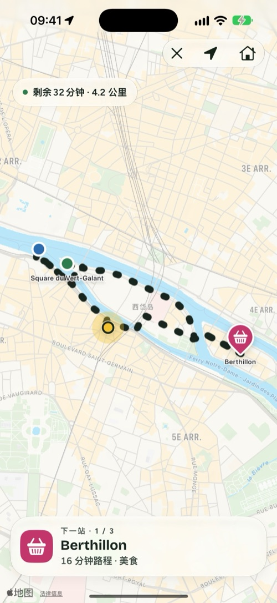
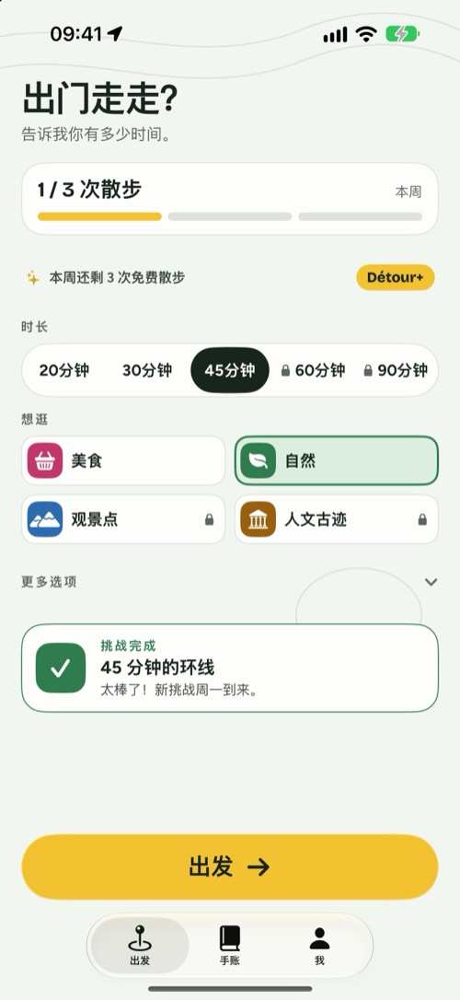
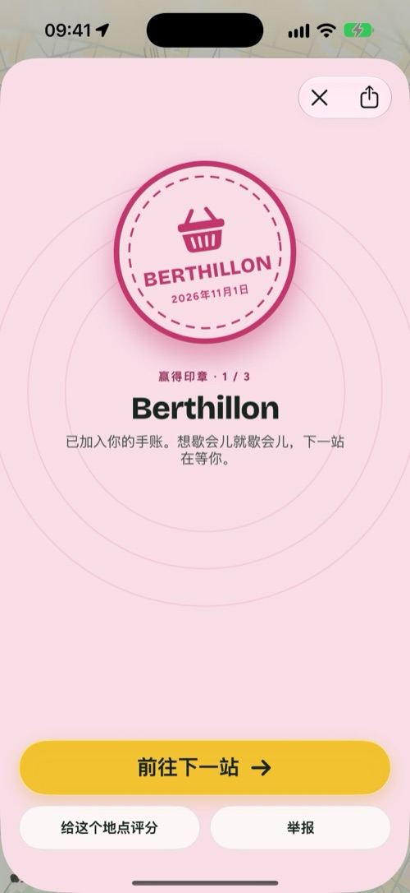
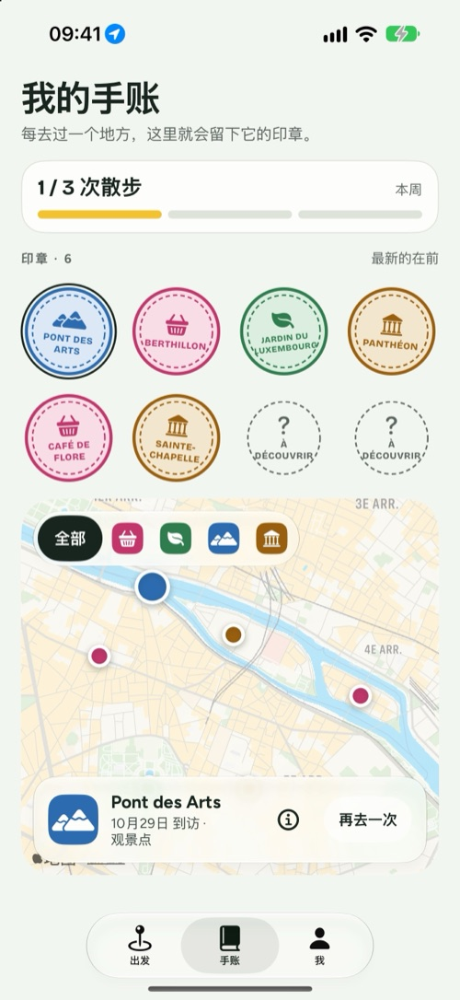

使用方法
三个选择，你就出门了。
Détour 不会告诉你怎么从 A 走到 B，而是给你一个出发的理由，再带你回到家。
1
你的时长
20、30、45 分钟，或者更久。环线从你所在的地方出发，再回到这里。
2
你的主题
美食、自然、观景点或人文古迹：沿途有 2 到 4 个真实的地方等你到达。
3
出发
跟着路线走。每到一个地方都会自动确认，并在你的手账里留下一枚印章。
四种主题
给你走路的理由，而不是一场观光。
美食面包店、咖啡馆、冰淇淋店。
自然公园、河边、花园。
观景点观景台、桥、全景。
人文古迹教堂、博物馆、纪念建筑。
看看画面
四个画面，一次散步。



iPhone Duo
合上握在手里，展开铺满地图。
- 合上时，外屏就能搞定最常用的操作：时长、主题，以及“出发”。
- 展开后，一边是设置，另一边是正在画出的环线。
- 惊喜模式：后面的地点在路上一个个揭晓。
- 散步时，下一个地点和剩余距离会一直显示在锁定屏幕和灵动岛上。
- 每周目标、徽章、每周一个挑战；如果你愿意，每次散步还能存入 Apple 健康。

Détour+
免费养成习惯，Détour+ 带你走得更远。
无限次散步、全部四种主题、最长 90 分钟并可自选路面的环线，还有惊喜模式。
免费试用 7 天
年度
最划算按年订阅，平均每月更省
月度
最灵活按月订阅，随时可取消
终身
一次买断一次购买，永久使用
免费版：每周 3 次散步，自然和美食两种主题，最长 45 分钟，含手账和徽章。价格因国家和地区而异，以 App Store 显示为准。订阅可在你的 Apple 账户设置中管理和取消。
隐私